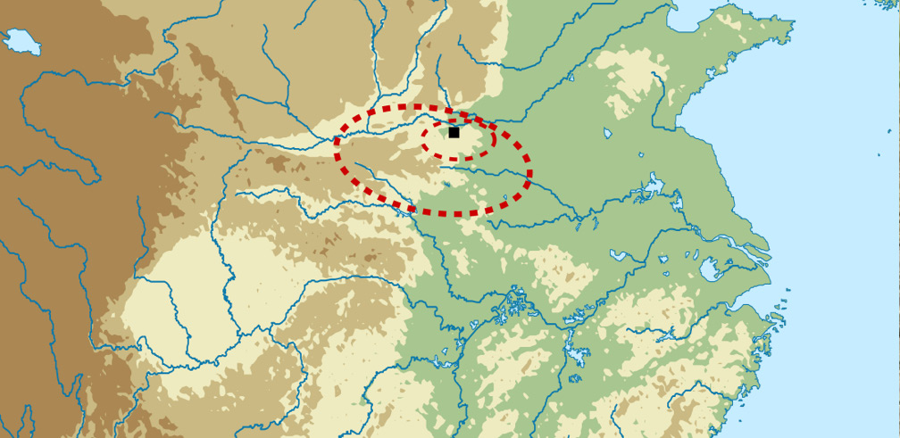

Location

https://commons.wikimedia.org/wiki/File:Erlitou_map.svg
The Erlitou site was named after the village it was discovered at, located on the Luo River in Yanshi County, Henan Province. It was discovered in 1959 by a Chinese archaeologist, Xu Xusheng (Xu Bingchang).